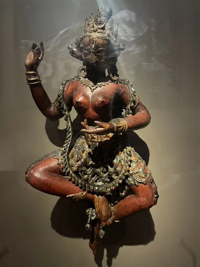
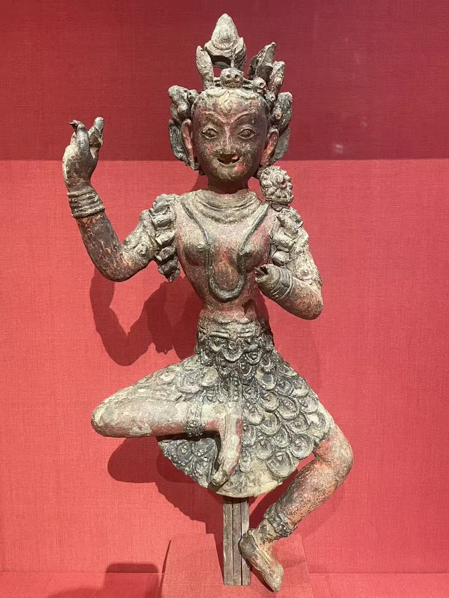
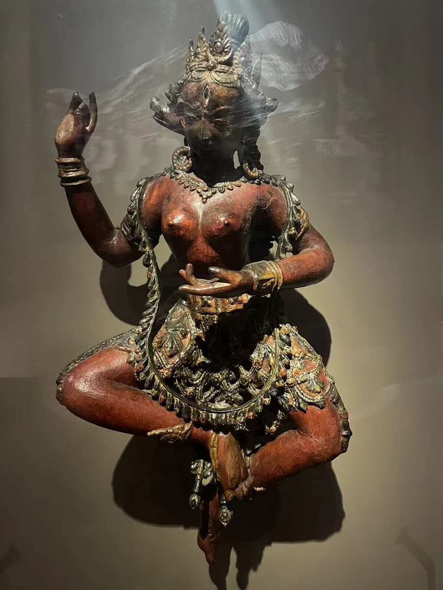

泥塑金刚亥母
沃尔特斯艺术博物馆
19 / CLOSE LOOKING

两尊红色金刚亥母使用了未烧制的泥。克利夫兰一件以铁与绳组成骨架，支撑舞动的身体。它们与铜像的光泽很不一样，也让我们想到保存的脆弱。克利夫兰一件现行断代已改为约1040—1310年，Walters 一件仍为15世纪；材料与姿态相近，不意味着必须同代。 [14] [22]
细看：红色表面与断裂处；骨饰、猪首与舞姿；支撑身体的结构。

沃尔特斯艺术博物馆
图片按各自比例展示，实物不等大。

未烧制泥、金属骨架、彩绘、反绘玻璃与金属箔
[22]作品基本资料据现场展签及下列馆方记录整理；文字中的观看描述基于这里的现场照片。